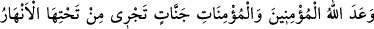
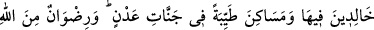
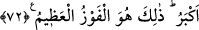

ermelerine hükmetmiştir. Kâfirler ve münâfıkların ise Allah’ı inkar etmeleri,
peygamberleri yalanlamaları, resimlere, heykellere ve taş ve sâireden yapılan putlara
tapmaları sebebiyle cehenneme girmelerine hükmetmiştir.
72. Allah, inanan erkeklere ve inanan kadınlara altlarından ırmaklar akan, içinde
sürekli kalacakları cennetler ve Adn cennetlerinde güzel meskenler vaadetmiştir.
Allah’ın rızası ise hepsinden büyüktür. İşte büyük kurtuluş budur.
“Allah, inanan erkeklere ve inanan kadınlara” ağaçlarının ve odalarının
“altlarından” su, bal, şarab ve sütten “ırmaklar akan, içinde sürekli kalacakları”
içerisinde ebedi ve devamlı kalmaları tayin ve tesbit edilmiş olan “cennetler”
vaadetmiştir. Cennet, içerisinde hurma ve ağaçlar bulunan bahçe demektir. Her mümin,
bu cennetlere mutlaka nâil olacaktır. Bazı hâs ve kâmil olanları için de cennet
mekanlarının en güzel ve en yüksek yerinde bulunan “Adn cennetlerinde güzel
meskenler” nefislerin hoşuna giden, içerisinde yaşaması hoş olan, bir haberde
belirtildiğine göre inci, zeberced ve kırmızı yâkuttan yapılmış köşkler “vaadetmiştir.”
Bu âyette Allah, keyfiyet ve kemmiyet yönünden üstünlüklerine göre her mümine şamil
olacak bir vaadde bulunmuştur.
Rivayet edildiğine göre Nebî (a.s.) şöyle buyurmuştur: “Adn, Allah’ın evidir. Onu ne
bir göz görmüş ne de o bir beşerin hatırına gelmiştir. Orada şu üç sınıf insandan
başkası sâkin olamaz: Peygamberler, sıddıklar ve şehidler. Müjdeler olsun oraya
girenlere!”[199]
Rivâyet edildiğine göre Allah Teâlâ Adn cennetini vasıtasız olarak bizzat kendi eliyle
yaratmıştır. Orasını kendisi için âdetâ bir melikin kalesi gibi kılmıştır. Orada bir
tepecik yaratmıştır ki burası noksanlıklardan münezzeh olan Hakk’ın tecelli edeceği
makamdır.
Mustafâ (s.a.) Efendimiz’in makamı olan “vesîle” makamını bu cennette yaratmıştır.
Tûbâ ağacını Adn cennetine dikmiş ve onu öyle uzatmıştır ki dalları Adn cennetinin
surları üzerine yükselmiş ve diğer tüm cennetlerin üzerine gölgelik olmuştur. Onun
dallarında tatlı meyveden başkası bulunmaz. Yeni ve en güzel elbiseler Adn cennetine
girenlerin giysisi olacaktır. Onların ziynetleri diğer cennetliklerin ziynetlerinden daha
güzel ve daha zariftir.
Adn cennetini bizzat Allah Teâlâ kendi eliyle yarattığı için özel bir üstünlüğe sahiptir.
Cennet nimetlerinin en çoğunu ve en bereketlilerini kendisinde toplamaktadır. Nasıl ki